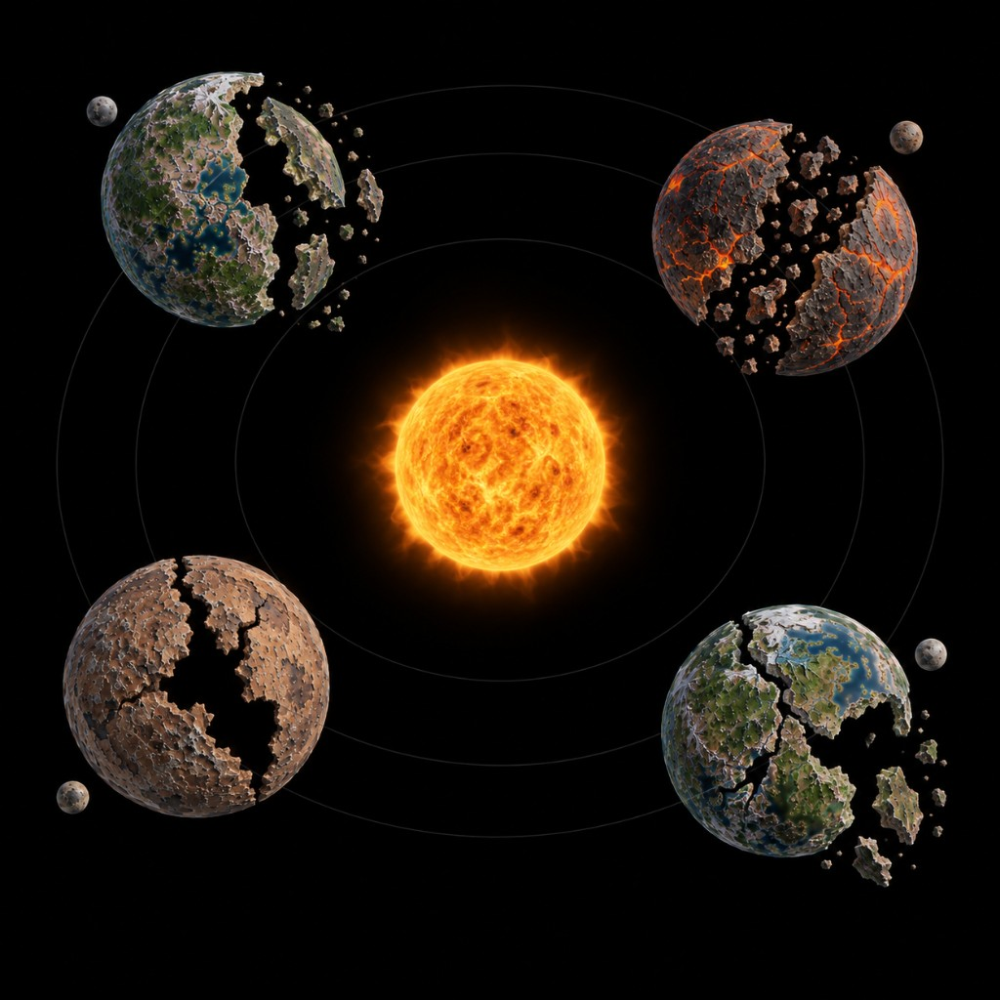
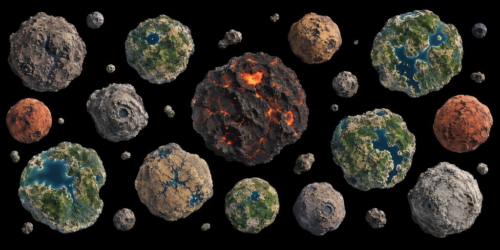
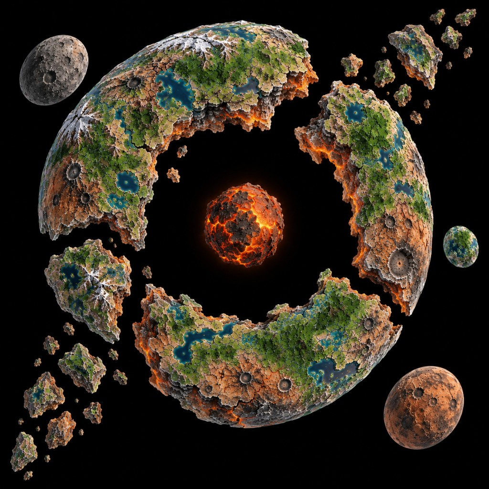
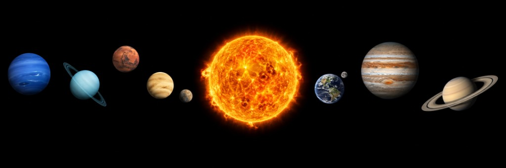
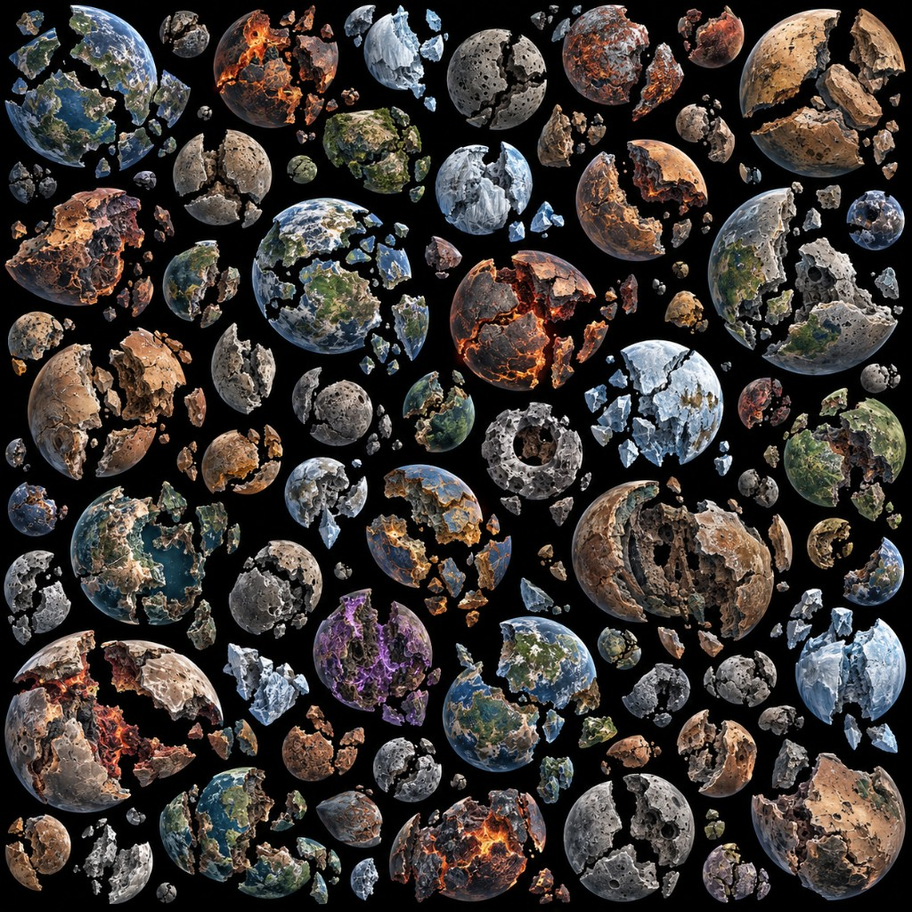
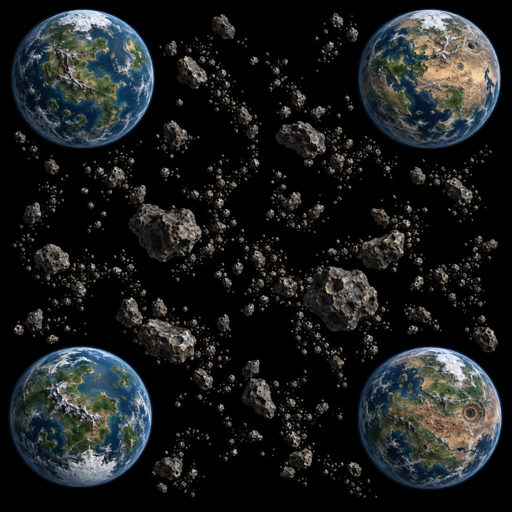
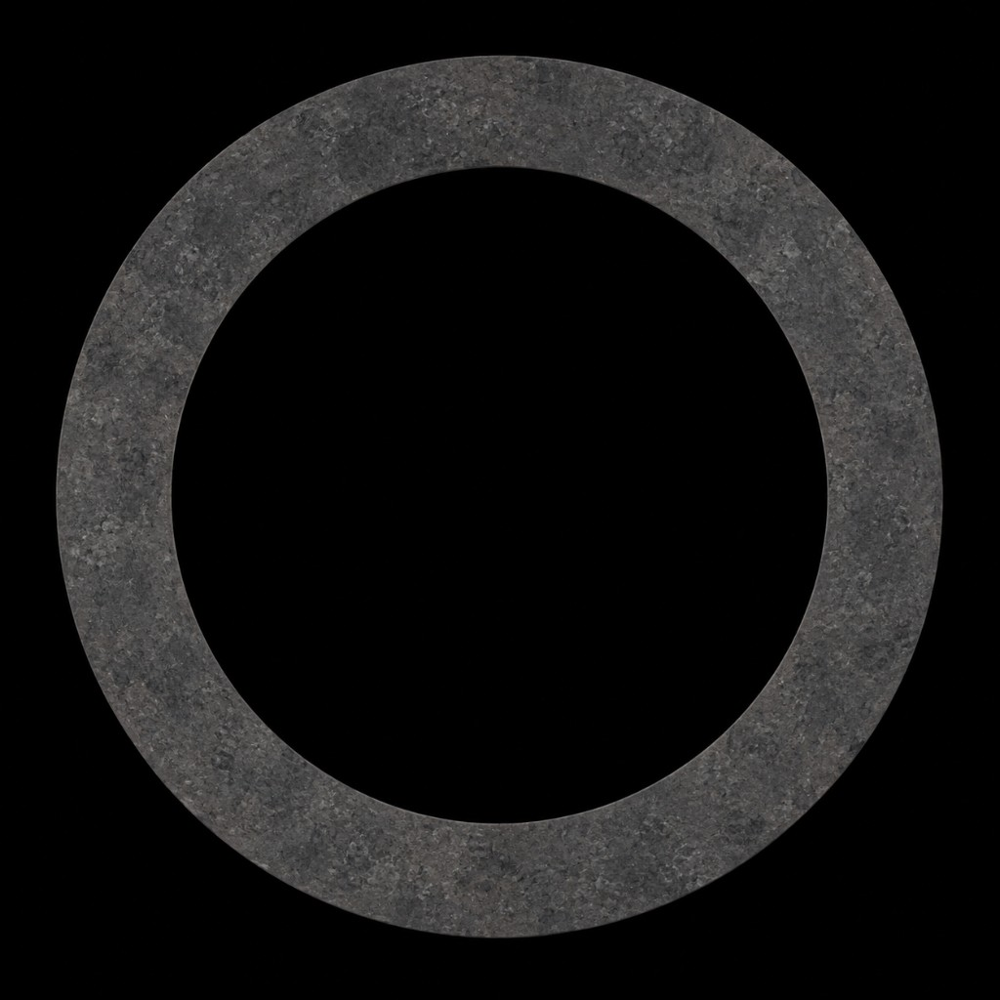

Marauder's Sea wiki
Maps, buildings, and island folklore for Marauder's Sea — a free pirate PC game you can play in the browser, including as a mobile strategy game on a phone. Age-of-sail warships, ports, and island warfare.
Start with the map guides or the building roster. Then play this browser pirate game free.
Maps
 Collision
Collision

Comet's Pass Verners System
Verners System

Shatterwake
The Hollow World
Sol System
Shattered
Four for War
Event Horizon One Big World
One Big World
 Twin Isles
Twin Isles
 Foot Island
Foot Island
 Caldera Island
Caldera Island
 Skull Island
Skull Island
 X Marks the Spot
X Marks the Spot
 Dragon's Fall Island
Dragon's Fall Island
 Hollow's Isles
Hollow's Isles
 The Hexacephalic Archipelago
The Hexacephalic Archipelago
 The Ember Isles
The Ember Isles
 Tarryn Fjords
Tarryn Fjords
 Vernon
Vernon